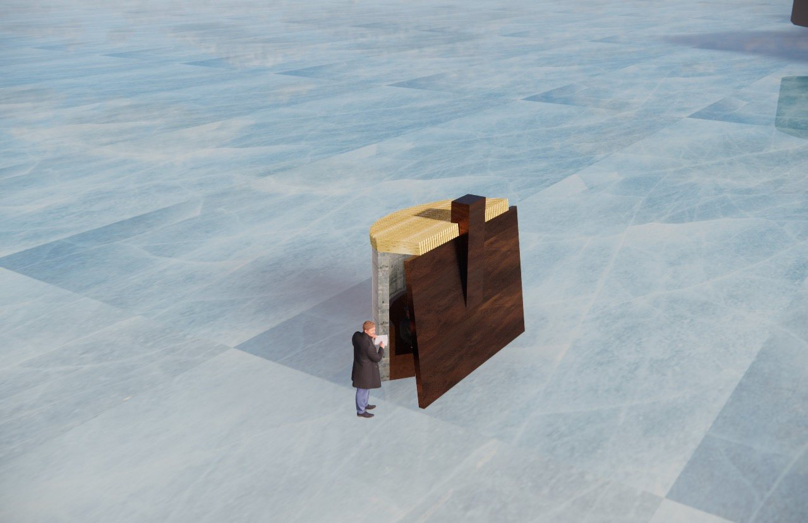

Design Studio, Winter 2024
Warming Hut
Concept Fire and Ice
A living room among the outdoors: fire and ice, a Cor-ten chimney, and a slanted wall that provides shelter from the winds.

- Brief
- Warming Huts competition, Winnipeg, MB
- Raft
- 7′-0″ × 14′-0″, set by the brief
- Structure
- 2×4 framing, plywood or OSB panels
- Key dimensions
- Chimney 11′-0″ high. Slanted wall 9′-9¼″ high, leaning at 83°. Fire pit 2′-0″ wide, 1′-8″ high
- Materials
- Cor-ten steel, ice brick, heated leather
- Team
- Pair project. Design, 3D model, drawings and sketches by Steven; the project partner set up the site in Enscape, exported the renderings and drew the roof sketch
Software and media
- 3D model
- SketchUp
- Renderings
- Enscape; site set up and renderings exported by the project partner
- Drawings
- AutoCAD
- Sketches
- Pencil and pen
The brief
A class exercise using the brief of Warming Huts: An Art + Architecture Competition on Ice, run by The Forks in Winnipeg, MB: a small shelter on the frozen river. The bench and the chimney all had to fit on the 7′ × 14′ raft.
First studies: a bench around a fire
The hut began from two shelters: the tipi, a room to sit in around a fire with the smoke drawn up and out at the top, and the igloo, whose ice blocks became the curved ice-brick wall. The first studies put a curved bench around the fire, turned away from the wind, under one sloping form with a chimney.
The roof: snow, light and smoke
Two forms were tested, a semi-circle with a roof of 2×4s and a semi-dome. The semi-circle carried forward with a slatted roof: the gaps hold a cover of snow, filter daylight in and keep the hut open to the air, so carbon monoxide from the propane fire cannot build up. The roof-options sketch shows pressure-treated 2×4s at 5″ on centre; the final design uses 2×10 lumber at 2¾″ on centre.
The resolved design
A wall against the wind
A solid slanted wall shields the occupants from the prevailing northerly and northwest winds and draws them to the bench. The translucent ice at the rear lets southerly sun glow behind the seats, while the fire warms them from the front. The fire sits under the Cor-ten chimney, which carries its heat and exhaust up and out above the timber roof; the chimney is also the design anchor, a landmark visible from a distance that invites people in.
Fire and Ice
The concept is contrast: warm against cold. Amid a sea of ice, the hut sets fire against ice, straight lines against curves, wood and colour against white snow, and soft leather benches, heated from a power cable on site, against hard ice and steel. The Cor-ten holds both: hot beside the fire, cold away from it. Wool blankets with vibrant patterns, made by Indigenous makers in Manitoba, were meant to be inside, for people to wrap up in by the fire; they were never modelled, so they do not appear in the renderings.